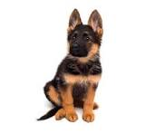
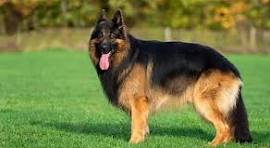

El Pastor Alemán es una raza originaria de Alemania. Fue desarrollada a finales del siglo XIX a partir de perros utilizados para el pastoreo y la protección del ganado. Uno de los principales responsables de su desarrollo fue Max von Stephanitz, considerado el fundador de la raza. Es un perro de tamaño mediano a grande, con un cuerpo fuerte, musculoso y ágil. Tiene las orejas erguidas y una cola larga y peluda. Su pelaje puede presentar diferentes colores, aunque es muy común encontrar ejemplares negros con zonas marrones o rojizas. Es conocido por ser inteligente, obediente, valiente y muy capaz de aprender órdenes. Por estas características, es una de las razas más utilizadas para diferentes trabajos. A lo largo del tiempo fue utilizado para pastorear y proteger ganado, pero actualmente también puede trabajar con fuerzas policiales, equipos de rescate, servicios de seguridad y como perro de asistencia. También es un popular perro de compañía. Necesita ejercicio físico y estimulación mental, ya que es una raza activa que puede aburrirse si no tiene suficiente actividad. Esperanza de vida: aproximadamente 9-13 años.
